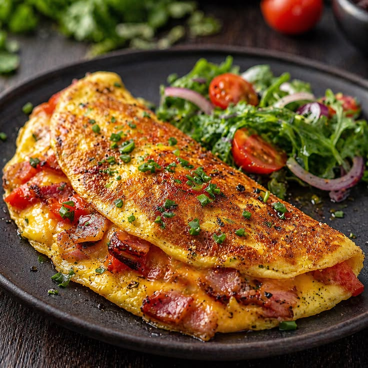

Breakfast classicA simple start
Simple Omelette
An easy and quick dish, perfect for any meal. This classic omelette combines beaten eggs cooked to perfection with your favorite fillings.
Gather first
Ingredients
- 2-3 large eggs
- Salt, to taste
- Pepper, to taste
- 1 tbsp butter or oil
- Optional fillings: cheese, diced vegetables, cooked meats, herbs
The method
Make it yours
- 01Beat the eggs
Beat the eggs with salt and pepper until well mixed. Add a splash of water or milk for a fluffier texture.
- 02Heat the pan
Place a non-stick frying pan over medium heat and add the butter or oil.
- 03Cook the omelette
When the butter bubbles, pour in the eggs and tilt the pan so they evenly coat the surface.
- 04Add fillings
When the edges set but the middle is still soft, sprinkle fillings over one half.
- 05Fold and serve
Fold the omelette over the fillings, cook for one more minute, and slide onto a plate.